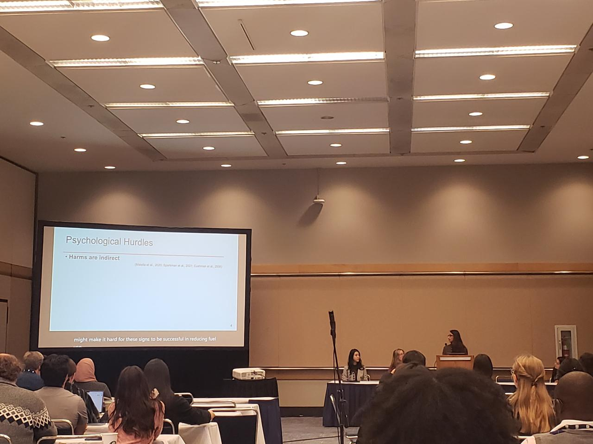
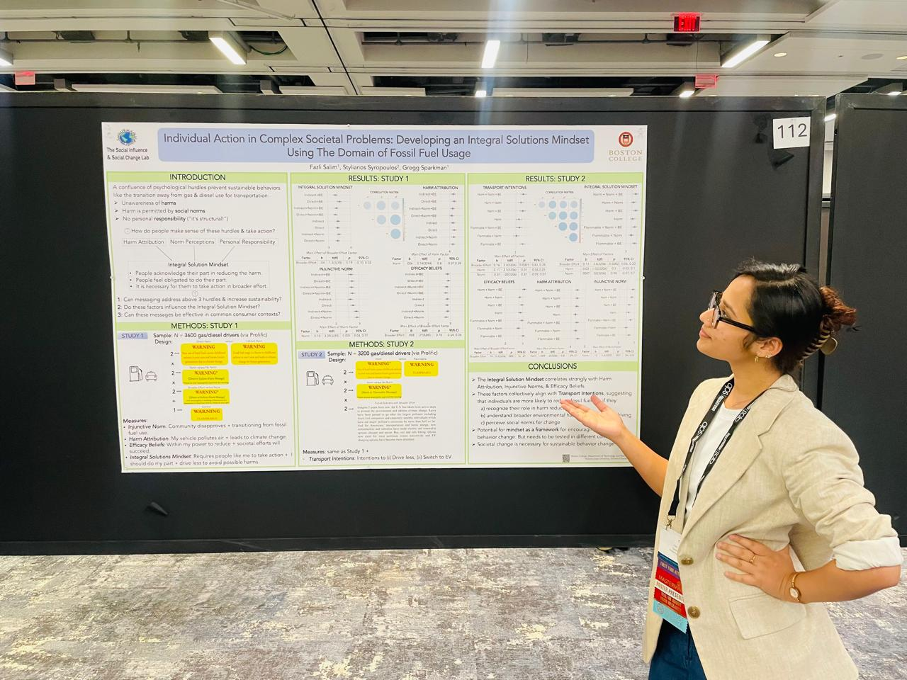
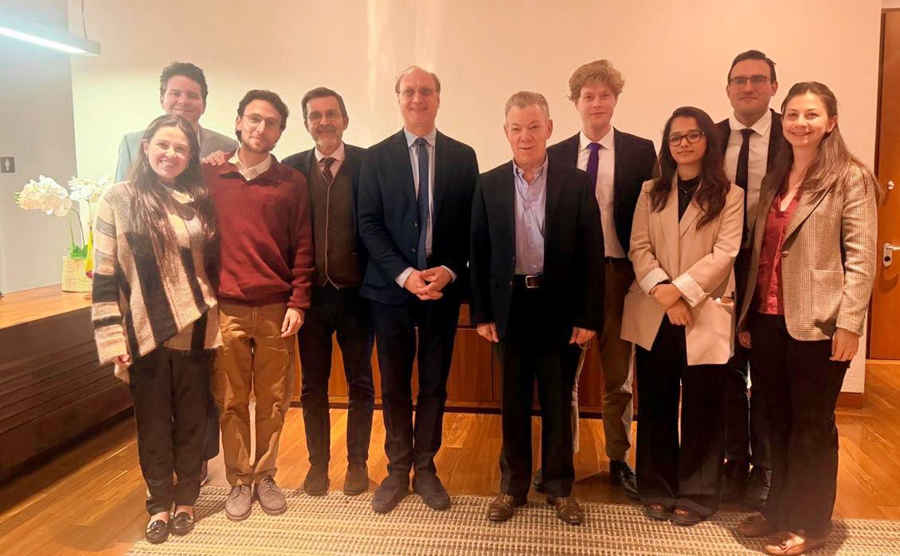
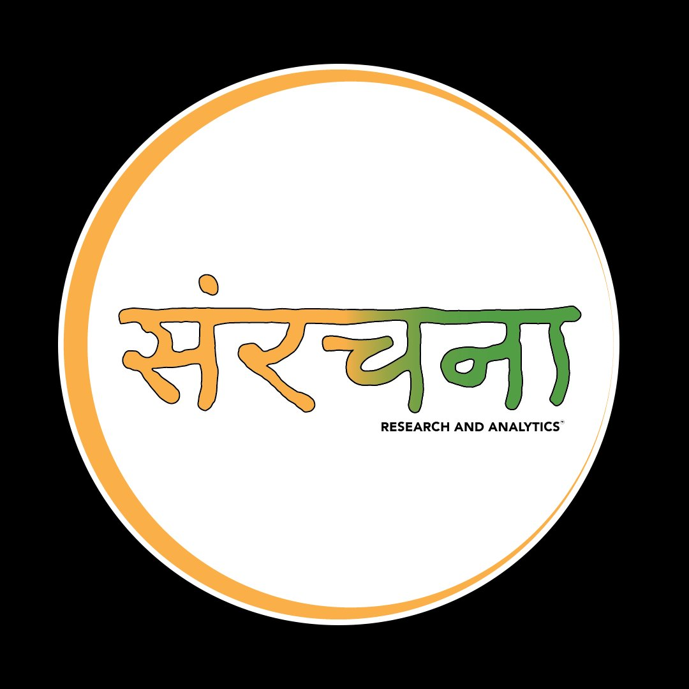

My research is developing at the intersection of social psychology, environmental policy, and democratic theory. It grew from a longer journey that taught me to ask not just how people behave, but why systems make certain behaviors feel possible or impossible in the first place.
How do people come to see themselves as an integral part of both individual and systemic solutions to societal challenges? I explore the psychological and social factors that shape individuals' perceptions of their agency in addressing large-scale problems.
Why do people fail to recognize systemic changes, and what shapes their sense of efficacy in collective action? I investigate how people navigate complex societal transformations, their beliefs about who needs to change, and how feelings of efficacy influence engagement.
What psychological frameworks are necessary for societies to facilitate equal and sustainable futures? I examine beliefs, values, and psychological frameworks that could support societal acceptance of alternative ways of evaluating growth and well-being.

2026
TalkIntervention Science Preconference, SPSP Annual Convention
Chicago · "Developing Multipronged Interventions: Shifting Perceptions of Harm, Norms, and Efficacy for Climate Action"

2025
PosterAssociation for Psychological Science Annual Convention
Washington D.C. · "Individual Action in Complex Societal Problems: Developing an Integrated Solution Mindset Using the Domain of Fossil Fuel Usage"
View poster →
2026
Academic MissionInternational Academic Mission on Democratic Resilience
Bogotá, Colombia · Pictured with former President Juan Manuel Santos, Nobel Peace Prize laureate.
APA Division 34 Virtual Conference — Symposium Chair
"Designing Norms that Last: Psychological Pathways to SDG"
Schiller Institute for Integrated Science and Society — Talk
"Evaluating the Impacts of Climate Warning Labels at Fuel Pumps"
Toulouse School of Economics — Talk
"Fueling Collective Action: Testing Climate Label Interventions"
Society for the Science of Motivation — Poster
"Individual Action in Complex Societal Problems: Developing an Integrated Solution Mindset"
Psychophysiology Lab, IIT Bombay — Talk
"Psychological Barriers to Reducing Fossil Fuel Driving: Evidence from U.S. Warning Label Experiments"
Before my doctoral studies, I worked across sectors in India.
SELCO Foundation
Developed systems thinking frameworks for renewable energy projects in rural India. Working here made clear that behavioral barriers, not just infrastructure gaps, are often what stand between clean energy and the communities who need it most.
Science Gallery Bengaluru
Research Associate to the Director. Conducted archival research on the history of modern Indian science and led research for a policy module developed with the Capacity Building Commission, Government of India.

Sanrachna Foundation
Conducted fieldwork in rural Uttarakhand on community perceptions of wildfires and climate risk, and curated The Behavioural Review — a weekly science communication newsletter that interviewed scientists on their work.
Ministry of Earth Sciences
Reviewed literature on climate change communication and presented findings to senior scientists. This was an early encounter with the distance between scientific knowledge and communication practice.